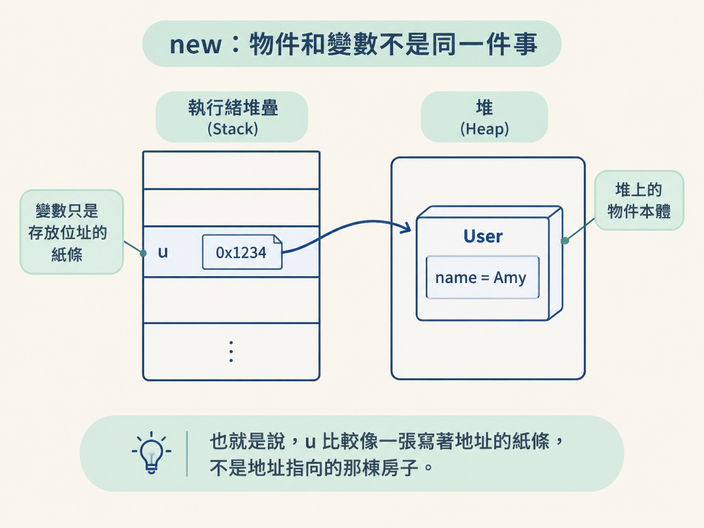
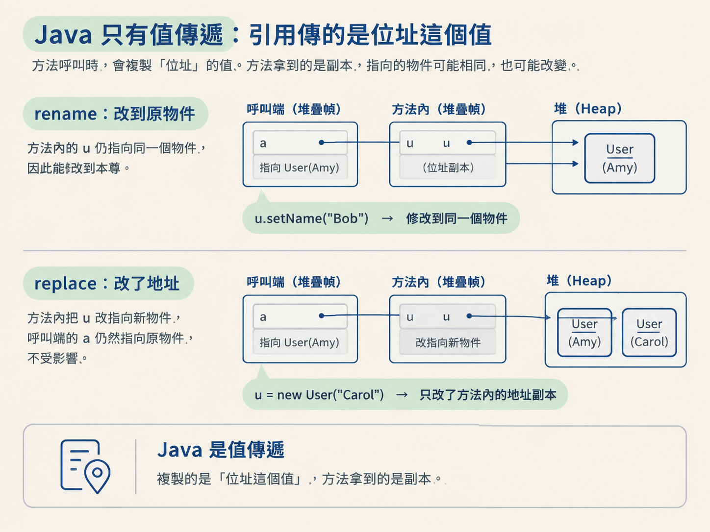
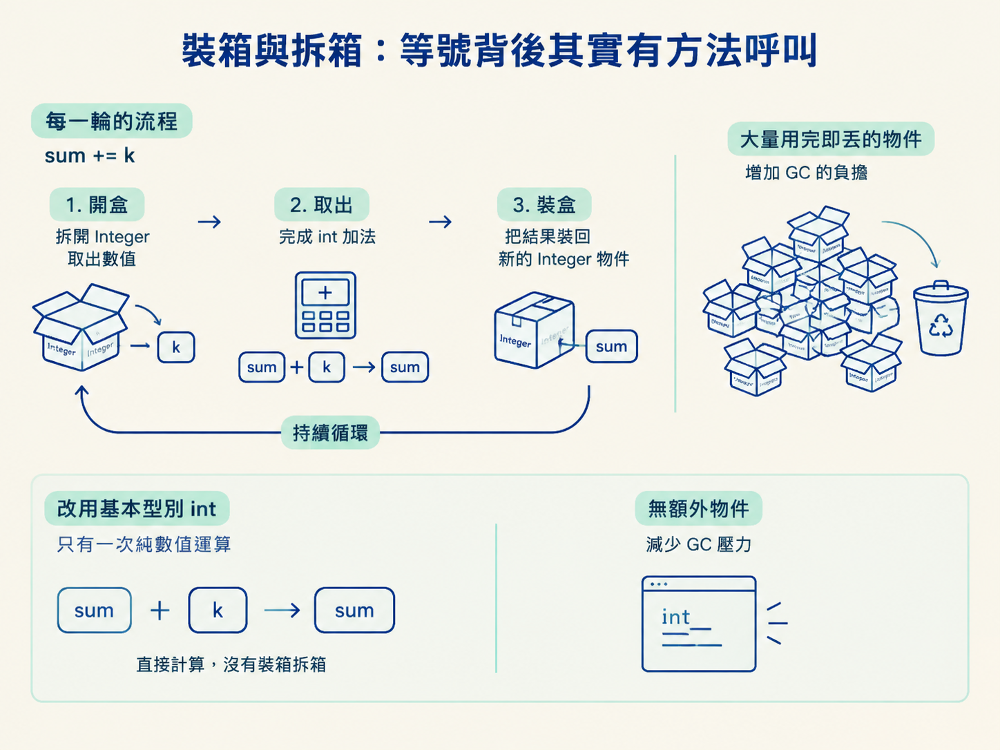
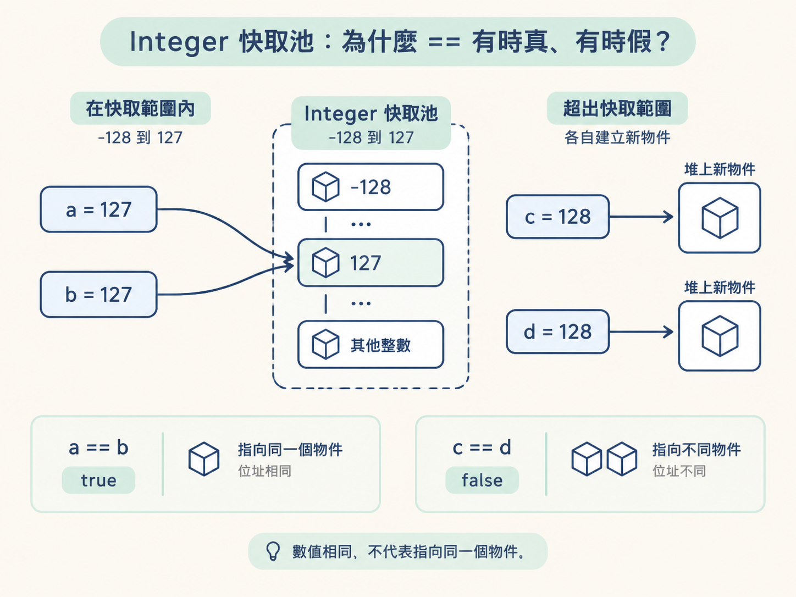

你可能遇過這種讓人困惑的情況：把一個物件傳進方法後，方法裡修改它的欄位，回到呼叫端一看，物件真的變了。於是很容易得出結論：Java 傳的是引用。
但下一次，你在方法裡把參數重新 new 成另一個物件，呼叫端的變數卻完全沒有變。明明都是「傳一個物件進方法」，為什麼一種修改外面看得到，另一種卻看不到？
這不是 Java 的規則前後矛盾，而是我們把「變數裡存的值」和「那個值指向的物件」混在一起了。本節會從 JVM 的棧幀開始，把參數傳遞時實際複製的內容拆開來看。理解這一層後，自動裝箱、Integer 快取池、淺拷貝與深拷貝，就會變成同一個核心概念的不同應用。
學完這一節，你應該能用棧幀清楚說明「Java 只有值傳遞」，也能分辨自動裝箱與 Integer 快取池造成的比較陷阱，以及淺拷貝與深拷貝的差別。
Java 雖然是物件導向語言，但為了保留較好的運算效率，仍提供了八種不是物件的基本型別，例如 int 和 boolean。它們不繼承 Object，本身也沒有方法，不能直接放進集合。
包裝類，例如 Integer 和 Boolean，可以想成替基本型別穿上一件「物件外套」。有了這件外套，基本型別就能加入原本只接受物件的 Java 生態系。
第一個需要包裝類的場景，是泛型與集合。Java 的泛型底層採用型別擦除，編譯後通常會以 Object 的形式處理。因此 List<int> 不能通過編譯，只能寫成 List<Integer>。只要要使用集合框架，基本型別就得先包裝起來。
第二個原因，是包裝類可以表達「沒有值」。例如資料庫中的年齡欄位，「使用者沒有填寫」和「使用者填了 0」是兩種不同狀態。若使用 int，預設值是 0，很難分辨這兩種情況；若使用 Integer，沒填可以表示成 null，填寫 0 才表示為 0。這在 ORM 映射與 API 傳參時尤其重要。
第三個原因，是包裝類提供了相關工具。基本型別能拿來做運算，但 Integer.parseInt("123")、Integer.toBinaryString(10) 和 Integer.MAX_VALUE 等功能，都掛在 Integer 上。
一句話記住：包裝類讓基本型別享有「物件的待遇」，但代價是需要建立物件並在堆上配置記憶體。因此在大量數值運算的熱路徑上，通常仍會優先使用基本型別。
每當 JVM 呼叫一個方法，就會在目前執行緒的虛擬機堆疊中推入一個新的棧幀。棧幀裡有一張局部變數表，用來存放參數與區域變數。
所謂值傳遞，就是把呼叫端變數裡面的內容複製一份，再放進被呼叫方法的局部變數表。關鍵不是「傳了什麼種類的變數」，而是「這個變數裡存的是什麼值」。
如果傳的是基本型別，變數格子裡存的就是數值本身。傳參時，複製過去的是這個數值。方法內即使修改了那份複本，也不會影響呼叫端原本的數值。
如果傳的是物件，變數格子裡存的不是整隻物件，而是物件在堆中的位置，也就是一個地址值。傳參時，JVM 複製的是這個地址值。因此，呼叫端與被呼叫端各自有一個變數，但兩個變數存放的地址相同，最後都指向堆中的同一個物件。
這就解釋了看似矛盾的兩種結果：方法內透過地址找到物件並修改欄位，外面自然看得到；但如果方法內把參數重新 new 成另一個物件，改變的只是被呼叫方法自己那個棧幀裡的地址，呼叫端手上的地址並沒有變。
void change(Dog d) {
d.setName("來福"); // 透過同一個地址改到同一隻狗 → 外面看得到
d = new Dog("二哈"); // 只換掉自己格子裡的地址 → 外面看不到
}
Dog myDog = new Dog("旺財");
change(myDog);
System.out.println(myDog.getName()); // 印出「來福」，不是「二哈」如果 Java 使用的是引用傳遞，myDog 應該會跟著變成「二哈」。但實際結果不是這樣，因為 Java 複製的始終是地址值，而不是讓兩個變數共用同一個「變數格子」。
可以把它想成影印一張寫著地址的紙條：你把紙條影印給對方，對方照著地址去修改那棟房子，你當然看得到房子的變化；但對方把自己那張紙條上的地址改成另一個地址，你手上的原始紙條不會跟著改。

基本型別和包裝類是兩種不同的型別，但我們卻可以直接寫出下面這種程式碼：
Integer a = 10;這是因為編譯器在編譯階段幫我們補上了轉換。這個過程發生在編譯器，不是 JVM 執行時才臨時決定的。
Integer a = 10; 會被改寫成 Integer a = Integer.valueOf(10);int b = a; 會被改寫成 int b = a.intValue();這層語法糖讓程式碼更好寫，但也把一些成本藏了起來。使用時，最常見的是以下三個坑。

第一個坑是效能。基本型別只是單純的資料，包裝類則是物件，除了物件本身，還需要物件頭與堆上的配置成本。如果在 for 迴圈裡反覆裝箱，就可能在短時間內建立大量暫時物件，增加垃圾回收器的工作量，甚至造成系統卡頓。
第二個坑是空指針。拆箱本質上會呼叫 xxxValue() 方法。如果包裝類物件是 null，自動拆箱時就會拋出 NullPointerException。例如，把一個可能為 null 的 Integer 直接指定給 int，就可能遇到這個問題。
第三個坑是 == 的結果可能忽真忽假。這是因為包裝類可能使用快取物件。先記住一個實務規則：比較包裝類的內容時，應該使用 equals，不要依賴 ==。
Integer 類別裡有一個靜態內部類 IntegerCache。當 Integer 第一次被載入時，靜態程式碼區塊會先把 -128 到 127 的 256 個整數物件建立好，放在靜態陣列裡。
這種做法可以視為享元模式：能共用的物件就先建立並重複使用，避免每次遇到相同數值都重新配置物件。
之後呼叫 Integer.valueOf(i) 時，包含自動裝箱的情況，程式會先檢查 i 是否落在快取範圍內。若在範圍內，就直接回傳陣列裡已有的物件引用；若超出範圍，才會另外建立新物件。

Integer a = 100, b = 100, c = 200, d = 200;
System.out.println(a == b); // true，兩個都命中快取，是同一個物件
System.out.println(c == d); // false，超出範圍，各自 new 一個快取範圍的下限 -128 是寫死在程式碼裡的，不能調整；上限 127 是預設值，可以透過 JVM 啟動參數 -XX:AutoBoxCacheMax=1000 調大。只能往上調，不能往下調；如果設定值小於 127，JVM 會忽略這個設定。
在高併發、而且數值大量集中於某個區間的情況下，調高上限可能減少物件建立，進而降低垃圾回收壓力。不過，這並不代表可以放心使用 == 來比較包裝類。
還有一個常見陷阱：只要直接使用 new，就不會走快取。因為 new 的意思就是在堆上建立一個新的物件，不論數值是不是落在 -128 到 127 之間都一樣。
因此，Integer a = 100; 和 Integer c = new Integer(100); 雖然數值相同，a == c 仍然會是 false。
用==比較兩個包裝類的數值，結果會受到快取範圍以及物件是否透過new建立的影響。這種程式碼可能今天正常，換個數字就出現錯誤。
比較包裝類的數值時，一律使用.equals()。如果要比較的是物件內容，就不要使用==。
複製物件時，同樣會遇到「複製的是物件本身，還是物件的地址」這個問題。
Object.clone() 預設提供的是淺拷貝。它是一個 native 方法，JVM 會先建立一個新物件，再把原物件的所有欄位以「按位拷貝」的方式複製過去。
基本型別欄位存的是數值，所以複製後彼此獨立；但引用型別欄位存的是地址，複製後新舊物件會持有相同的地址。也就是說，兩個物件裡的 list 欄位，最後仍然指向堆中的同一個 List。
class Order implements Cloneable {
List<String> items = new ArrayList<>();
public Order clone() throws CloneNotSupportedException {
return (Order) super.clone(); // 淺拷貝：items 仍共用
}
}
Order o1 = new Order();
Order o2 = o1.clone();
o2.items.add("筆電");
System.out.println(o1.items.size()); // 1！o1 也被影響了這就是淺拷貝最容易踩到的地方：你以為複製出一張獨立訂單，實際上兩張訂單共用同一個購物車。只要其中一邊修改清單，另一邊也會看到變化。
若需要深拷貝，常見有兩種做法。
第一種是遞迴重寫 clone()，把所有引用型別欄位也一層一層複製下去。這種做法程式碼較長，也容易漏掉某個引用欄位。當物件層級變深後，維護成本會快速上升，因此現在較少直接採用。
第二種是先把物件序列化成位元組流或 JSON 字串，再反序列化成另一個物件。經過這個「先拆成資料，再重新組裝」的過程後，原本的引用關係會被打散，還原出的物件就會是獨立的新物件。實務上常見 Jackson 或 Gson；相較於 Java 原生序列化，這種做法效能較好，也是生產環境常見的選擇。

這一節其實圍繞著同一個核心：變數裡存的永遠是「值」，只是這個值有時是數值，有時是物件的地址。
基本型別傳遞時，複製的是數值；物件傳遞時，複製的是地址值。於是方法可以透過複製的地址修改同一個物件，但不能透過重新指定參數，改掉呼叫端變數裡的地址。
裝箱與拆箱是基本型別和包裝類之間的轉換；Integer 快取池則說明了為什麼某些包裝類使用 == 時結果會不同；淺拷貝則進一步展示了引用欄位被複製後，為什麼新舊物件仍會共享內部資料。
只要抓住「數值本身」與「指向物件的地址」這條主線，參數傳遞、裝箱拆箱、快取比較，以及物件拷貝，就不再是四個零散的陷阱。